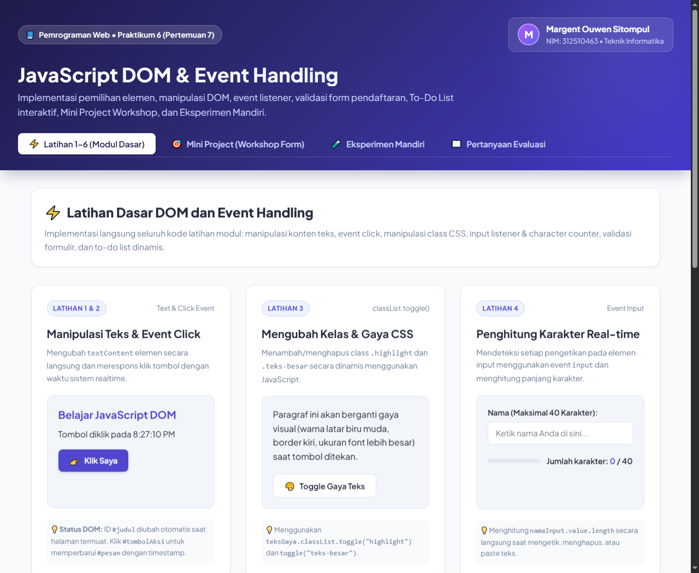
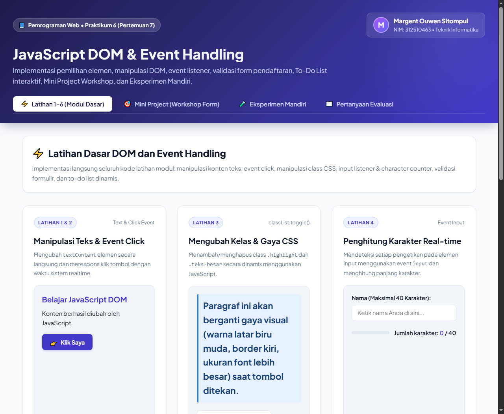
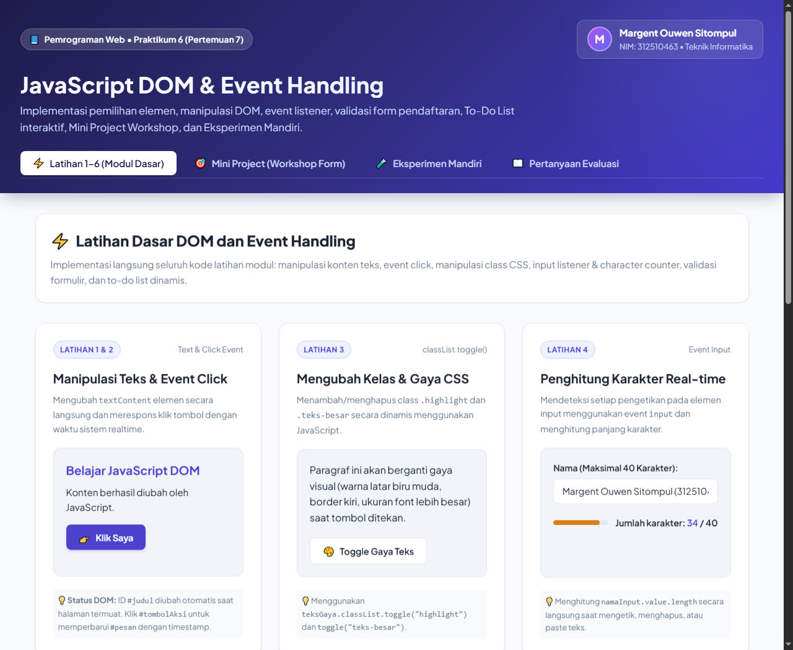
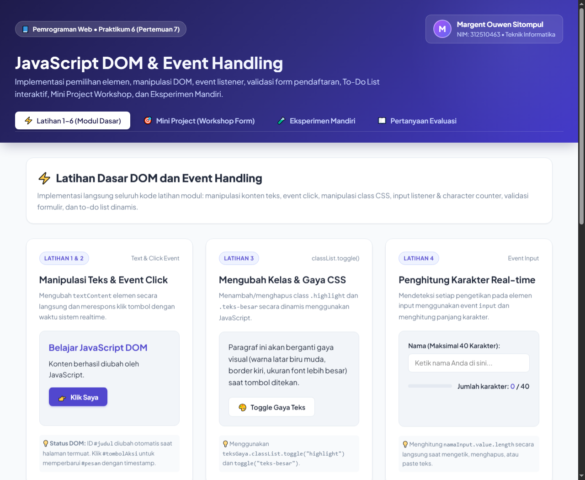
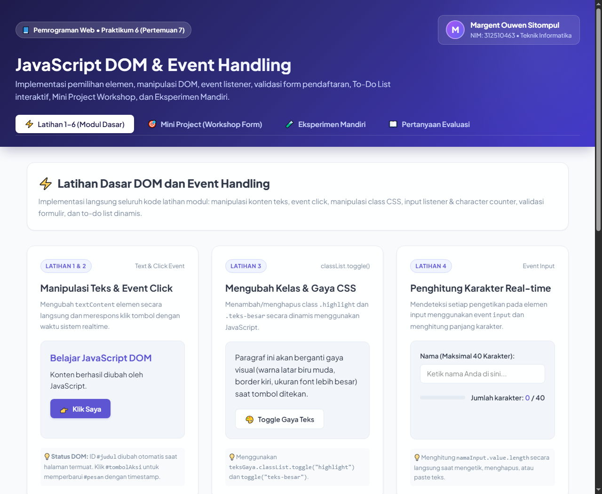
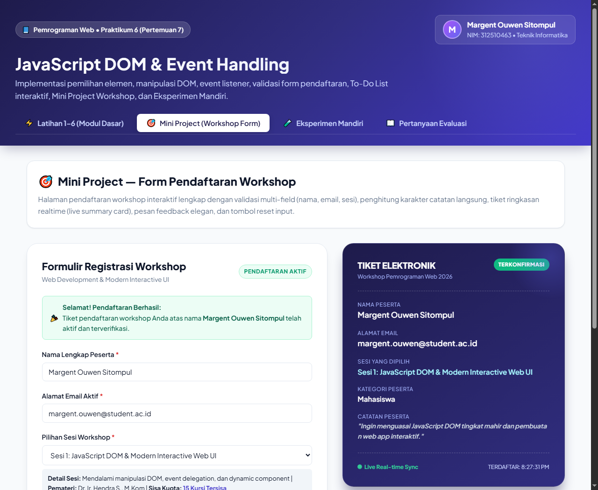
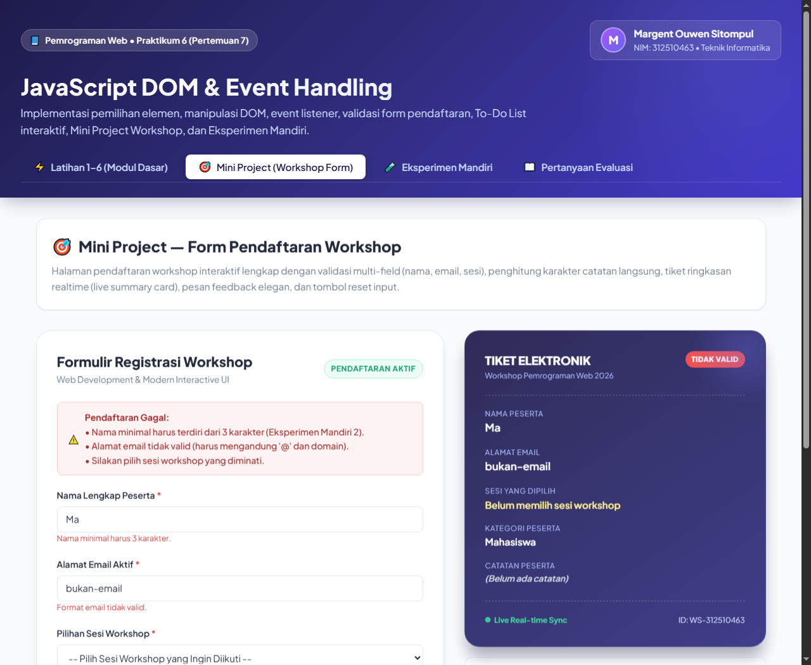
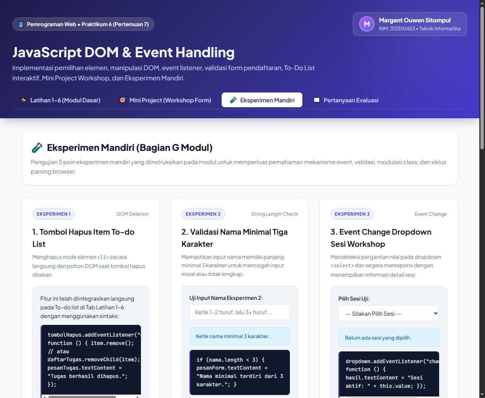

Kurikulum Berbasis OBE (Outcome-Based Education) • Pemrograman Web
Implementasi Pemilihan Elemen, Manipulasi DOM, Event Handling, Validasi Formulir, To-Do List Interaktif, dan Mini Project Registrasi Workshop
| Nama Lengkap | : | Margent Ouwen Sitompul |
| NIM | : | 312510463 |
| Mata Kuliah | : | Pemrograman Web |
| Pertemuan | : | 7 (Praktikum 6) |
| Repository | : | Lab6Web |
| Mata Kuliah | Pemrograman Web |
|---|---|
| Pertemuan / Modul | Pertemuan 7 / Praktikum 6 |
| Topik Utama | JavaScript DOM (Document Object Model) dan Event Handling |
| Cakupan Materi | Pemilihan dan manipulasi elemen, event listener, validasi form, dan interaksi pengguna |
| Nama Mahasiswa | Margent Ouwen Sitompul |
| Nomor Induk Mahasiswa (NIM) | 312510463 |
| Perangkat Kerja | Laptop / PC, Visual Studio Code, Browser Google Chrome, Node.js v26.7.0 |
Berdasarkan panduan modul praktikum, tujuan yang harus dicapai mahasiswa meliputi:
id, class, dan selector CSS untuk memilih elemen HTML dengan metode getElementById(), querySelector(), dan querySelectorAll().textContent), atribut (setAttribute), kelas CSS (classList.toggle, add, remove), dan gaya elemen melalui JavaScript.addEventListener() pada berbagai jenis event seperti click, input, change, dan submit.Document Object Model (DOM) adalah antarmuka pemrograman (API) standar W3C yang merepresentasikan dokumen HTML atau XML sebagai hierarki pohon objek (DOM Tree). Ketika browser web memuat halaman HTML, browser akan melakukan proses parsing kode sumber menjadi objek-objek JavaScript yang dapat dibaca, diubah, dihapus, maupun ditambahkan secara dinamis pada saat runtime tanpa me-reload dokumen secara keseluruhan.
JavaScript menyediakan beberapa metode utama untuk memilih elemen HTML:
document.getElementById("id"): Memilih satu elemen spesifik berdasarkan nilai atribut id. Metode ini merupakan selector paling cepat karena indeks ID dioptimalkan secara langsung oleh mesin browser.document.querySelector("selector"): Memilih elemen pertama dalam dokumen yang cocok dengan selector CSS tertentu (misalnya .class, #id, tag[attr]).document.querySelectorAll("selector"): Memilih seluruh elemen yang cocok dengan selector CSS dalam bentuk koleksi NodeList statis yang dapat diiterasi menggunakan perulangan forEach.
Untuk memperbarui teks pada elemen, standar modern merekomendasikan penggunaan textContent dibandingkan innerHTML saat menampilkan data masukan pengguna. textContent memperlakukan seluruh string sebagai teks murni (literal string) sehingga mencegah celah keamanan Cross-Site Scripting (XSS) di mana penyerang berusaha menyisipkan skrip berbahaya ke dalam DOM.
Event adalah kejadian atau aksi yang terjadi pada browser, seperti pengguna menekan tombol mouse (click), mengetik huruf (input), mengganti pilihan dropdown (change), atau mengirim formulir (submit). Melalui addEventListener(), kita dapat menghubungkan suatu elemen dengan fungsi penangan (callback listener) secara modular tanpa menimpa event listener lainnya.
Pada event submit pada formulir, pemanggilan event.preventDefault() sangat penting untuk menghentikan aksi bawaan browser yang biasanya me-refresh halaman (reload), sehingga verifikasi validasi data dapat diselesaikan secara mulus melalui JavaScript.
Sesuai instruksi Bagian D dan I Modul, repository dibangun bernama Lab6Web dengan struktur file yang rapi:
Tujuan: Mengubah teks pada elemen ber-ID #judul dan #pesan menggunakan textContent, serta memasang event listener click pada #tombolAksi untuk memperbarui pesan dengan waktu lokal terkini.

Tujuan: Mengendalikan tampilan elemen #teksGaya secara dinamis menggunakan metode classList.toggle("highlight") dan classList.toggle("teks-besar") saat #tombolGaya ditekan.

Tujuan: Membaca input teks secara real-time menggunakan event input pada #namaInput dan menampilkan jumlah karakter aktif pada elemen #jumlahKarakter.

Tujuan: Memeriksa keabsahan masukan formulir pendaftaran (nama tidak boleh kosong, pola email sesuai regex, dan usia berupa bilangan bulat dalam rentang 17–100 tahun).

Tujuan: Membuat aplikasi To-do List yang dapat menambahkan node elemen <li> ke dalam <ul> secara dinamis menggunakan document.createElement() dan menandai tugas selesai via classList.toggle("selesai").

Berdasarkan spesifikasi Bagian F Modul Praktikum, Mini Project dikembangkan sebagai aplikasi registrasi workshop interaktif bertajuk "Web Development & Modern Interactive UI Workshop". Aplikasi ini mengintegrasikan seluruh teknik DOM dan event handling yang dipelajari:


Solusi: Pada fungsi pembuat item to-do, ditambahkan elemen tombol <button> berlabel "Hapus" yang memiliki event listener item.remove() (atau daftarTugas.removeChild(item)). Ketika diklik, node <li> terkait langsung dihilangkan dari pohon DOM.
Solusi: Kondisi validasi nama diperluas dari nama === "" menjadi:
Solusi: Dropdown <select id="wsSesi"> dipasangi event listener change. Saat pengguna memilih opsi baru, JavaScript membaca nilai wsSesi.value serta atribut data (deskripsi, pemateri, sisa kuota) dan menampilkannya langsung ke kotak informasi sesi.
Solusi: Dibuat class CSS .hidden-element { display: none !important; } dan tombol aksi yang memanggil paragraf.classList.toggle("hidden-element"). Ketika class ditambahkan, paragraf disembunyikan; saat dicopot, paragraf tampil kembali.
Hasil Pengamatan & Penyebab:
Ketika tag <script src="script.js"></script> ditaruh di dalam tag <head> tanpa atribut defer:
document.getElementById("judul") akan mengembalikan nilai null karena elemen HTML dengan ID tersebut belum ada di dalam DOM.judul.textContent = ..., browser akan melempar pesan kesalahan runtime: Uncaught TypeError: Cannot set properties of null (setting 'textContent') dan seluruh skrip di bawahnya akan berhenti bekerja.defer pada tag script di bagian head, atau menaruh tag script sebelum tag penutup </body>, atau membungkus kode dalam document.addEventListener("DOMContentLoaded", ...).
Jawaban:
Document Object Model (DOM) adalah antarmuka pemrograman berstandar W3C yang memodelkan dokumen HTML sebagai pohon struktur berorientasi objek (tree of objects). Setiap tag, atribut, dan teks diwakili sebagai node objek yang memiliki properti dan metode.
Manfaat DOM:
Jawaban:
Perbedaan ketiganya terletak pada jenis selector yang diterima, nilai kembali, dan performanya:
| Metode | Argumen Selector | Nilai Return | Karakteristik |
|---|---|---|---|
getElementById(id) |
Hanya string nama ID (tanpa tanda #) |
1 objek Element tunggal atau null |
Performa paling cepat karena browser mengindeks ID secara khusus. |
querySelector(sel) |
Selector CSS apa pun (#id, .class, tag, attribute) |
1 elemen pertama yang cocok atau null |
Fleksibel untuk memilih elemen bersarang spesifik. |
querySelectorAll(sel) |
Selector CSS apa pun | Koleksi NodeList statis |
Mengambil semua elemen yang cocok, mendukung method .forEach(). |
Jawaban:
Fungsi addEventListener() adalah metode standar pada objek DOM EventTarget untuk mendaftarkan fungsi penanganan (event listener/callback) yang akan dipanggil saat suatu event tertentu terjadi pada elemen tersebut. Keunggulannya adalah dapat memasang beberapa penangan berbeda pada elemen yang sama tanpa menimpa fungsi lain.
Tiga Contoh Event:
click: Terpicu saat tombol mouse ditekan atau layar sentuh disentuh pada suatu elemen.input: Terpicu secara instan setiap kali isi teks input/textarea berubah (berguna untuk character counter).submit: Terpicu saat formulir dikirimkan oleh pengguna.
Jawaban:
Secara bawaan (default behavior), pengiriman formulir HTML akan memicu browser untuk memuat ulang halaman atau berpindah ke URL atribut action. Pemanggilan event.preventDefault() digunakan untuk membatalkan perilaku bawaan tersebut, sehingga proses validasi formulir dan manipulasi DOM dapat diselesaikan sepenuhnya oleh JavaScript di sisi klien tanpa kehilangan status data atau menyebabkan kedipan reload halaman.
Jawaban:
| Aspek | textContent |
innerHTML |
|---|---|---|
| Penggunaan | Menyisipkan atau membaca string sebagai teks murni tanpa mengurai tag HTML. | Menyisipkan string yang akan di-parse oleh browser menjadi elemen HTML nyata. |
| Keamanan | Aman. Tidak dapat disusupi kode berbahaya karena tag diperlakukan sebagai karakter teks literal. | Rentan XSS. Jika teks pengguna disisipkan langsung, penyerang dapat menyuntikkan skrip jahat. |
| Kinerja | Lebih cepat karena tidak memicu parser HTML browser. | Lebih lambat karena browser harus mem-parsing markup string menjadi node DOM. |
Jawaban:
classList.toggle("namaKelas") berfungsi sebagai sakelar (toggle switch):
jika kelas tersebut belum ada pada elemen, method akan menambahkannya; jika sudah ada, method akan menghapusnya. Hal ini menghemat kode karena pengembang tidak perlu menulis logika pengecekan kondisi manual if (el.classList.contains(...)). Fitur ini sangat bermanfaat untuk tombol tema (dark mode), accordion, dan penandaan status selesai pada to-do list.
Jawaban:
Berikut adalah 5 skenario pengujian yang telah diuji dan divalidasi pada praktikum ini:
Berdasarkan serangkaian latihan, pengembangan mini project, dan eksperimen mandiri yang telah diselesaikan pada Praktikum 6 (Pertemuan 7) Pemrograman Web, dapat disimpulkan bahwa:
addEventListener() memberikan fleksibilitas tinggi dalam menangani berbagai event (click, input, change, submit) secara modular dan terpisah dari markup HTML.event.preventDefault() sangat penting untuk memberikan umpan balik langsung (instant feedback) kepada pengguna sebelum data dikirimkan ke server, sehingga meningkatkan efisiensi dan pengalaman pengguna (User Experience).textContent terbukti lebih aman dibandingkan innerHTML dalam menangkal kerentanan Cross-Site Scripting (XSS).defer pada tag skrip di dalam <head> merupakan praktik terbaik (best practice) agar seluruh pohon DOM selesai diparsing oleh browser sebelum skrip dieksekusi, menghindari kesalahan fatal null reference.Jakarta, 27 Oktober 2026
Praktikan,
Margent Ouwen Sitompul
NIM. 312510463